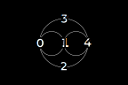

Cosas que hago en distintos ámbitos

o1234 (04)
un mapa estructural de un proyecto en el que intervienen varias disciplinas, desde la instalación, la performance, el video arte, la documentación, etc. El proyecto se ramifica y crece como un organismo vivo.
Ver Proyecto
Sandbox Frontend en Github
Laboratorio de experimentación donde experiemnto con cuestiones de desarrollo.
Ver Proyecto